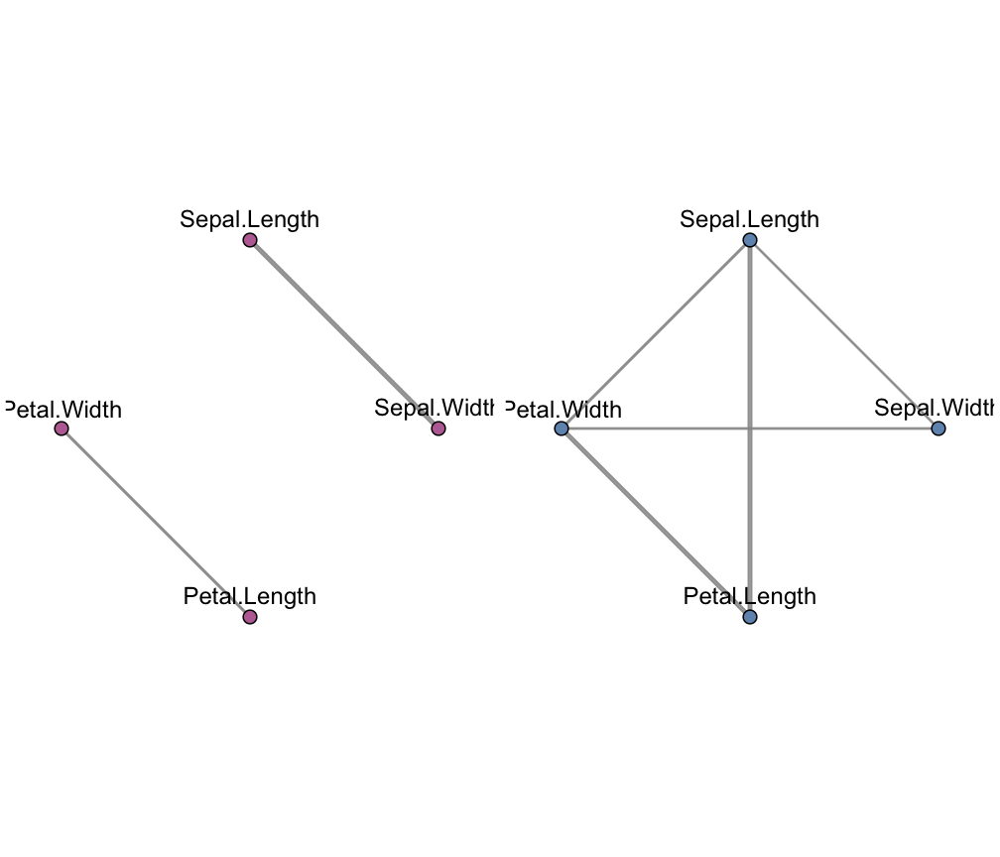
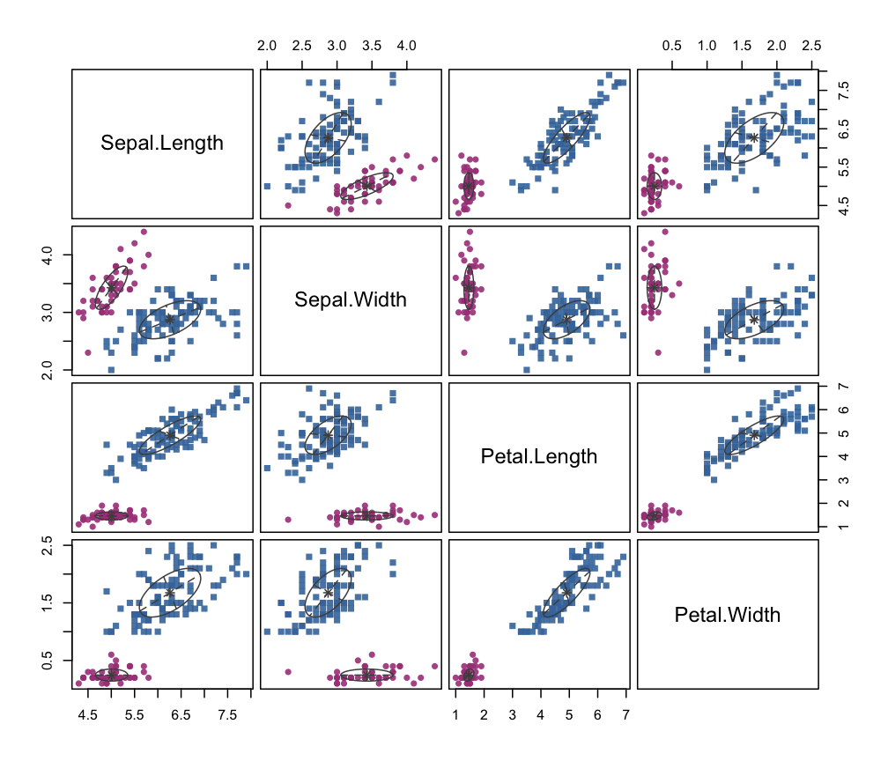

mixGGM.RdEstimation of a mixture of Gaussian covariance or concentration graph models using structural-EM algorithm. The mixture model returned is the optimal model according to BIC.
mixGGM(data, K = 1:3, model = c("covariance", "concentration"), search = c("step-forw", "step-back", "ga"), penalty = c("bic", "ebic", "erdos", "power"), beta = NULL, regularize = FALSE, regHyperPar = NULL, ctrlEm = ctrlEM(), ctrlStep = ctrlSTEP(), ctrlGa = ctrlGA(), ctrlIcf = ctrlICF(), keepAll = FALSE, parallel = FALSE, verbose = interactive())
| data | A dataframe or matrix, where rows correspond to observations and columns to variables. Categorical variables are not allowed. |
|---|---|
| K | An integer vector specifying the numbers of mixture components (clusters) for which the BIC is to be calculated. |
| model | The type of Gaussian graphical model. Default is |
| search | The type of structure search algorithm. If |
| penalty | The penalty function used to define a criterion for scoring the candidate graph configurations. Default is |
| beta | The hyperparameter of the penalty function. See "Details" and |
| regularize | A logical argument indicating if Bayesian regularization should be performed. Default to |
| regHyperPar | A list of hyper parameters for Bayesian regularization. Only used when |
| ctrlEm | A list of control parameters used in the structural-EM algorithm; see also |
| ctrlStep | A list of control parameters used in the stepwise search; see also |
| ctrlGa | A list of control parameters for the genetic algorithm; see also |
| ctrlIcf | A list of control parameters employed in the algorithm for estimation of graphical model parameters; see also |
| keepAll | A logical argument. If |
| parallel | A logical argument indicating if parallel computation should be used for structure search in the M step of the structural-EM algorithm. If TRUE, all the available cores are used. The argument could also be set to a numeric integer value specifying the number of cores to be employed. |
| verbose | If |
An object of class 'mixGGM' containing the optimal estimated mixture of Gaussian graphical models.
The output is a list containing:
A list with the following components:
tauA vector containing the estimated mixing proportions.
muThe mean for each mixture component. Columns denote the mixture components.
sigmaAn array containing the components covariance matrices.
omegaAn array containing the components concentration (inverse covariance) matrices.
An array with the adjacency matrices corresponding to the optimal marginal or conditional independence graphs for each mixture component.
Number of observations in the data.
Number of variables in the data, corresponding to the number of nodes in the graphs.
Number of selected mixture components.
Value of the maximized log-likelihood.
Value of the maximized penalized log-likelihood.
Value of the maximized regularized log-likelihood. If regularize = FALSE, this value is equal to loglik
A vector with two entries:
depParTotal number of dependence parameters. If model = "covariance", this is the total number of non-zero covariance parameters, while if model = "concentration", it corresponds to the total number of non-zero concentration parameters.
totParTotal number of mixture parameters.
A matrix whose [i,k]th entry is the probability that observation i of the data belongs to the kth class.
Classification corresponding to the maximum a posteriori of matrix z.
Optimal BIC value.
All BIC values.
The data matrix provided in input.
Estimated model type, whether "covariance" or "concentration".
The type of penalty on the graph structure.
The search method used for graph structure search.
A list containing all the estimated models. Provided in output only when keepAll = TRUE.
Estimation of a mixture of Gaussian graphical models by means of maximization of a penalized log-likelihood via structural-EM algorithm. The mixture model in output is the optimal model selected by BIC.
If model = "covariance", a mixture of Gaussian covariance graph models is estimated. The Gaussian mixture is parameterized in terms of the components covariance matrices and the component adjacency matrices correspond to marginal independence constraints among the variables:
$$X \sim \sum_{k}^K\tau_k\mathcal{N}(\mu_k, \Sigma_k) \quad \Sigma_k \in C^{+}_G(A_k)$$
Variables associated to two non-connected edges in the graphs are marginally independent and have different marginal association patterns across the mixture components. As a result, the covariance matrices sigma are estimated to be sparse according to the inferred graph structures.
If model = "concentration", estimation of a mixture of Gaussian concentration graph model is performed. The Gaussian mixture is parameterized in terms of the components concentration matrices and the component adjacency matrices correspond to conditional independence constraints among the variables:
$$X \sim \sum_{k}^K\tau_k\mathcal{N}(\mu_k, \Omega_k) \quad \Omega_k \in C^{+}_G(A_k)$$
Variables associated to two non-adjacent edges in the graph are conditionally independent given their common neighbors and have different conditional dependence patterns across the mixture components. It results in the concentration matrices omega being estimated to be sparse according to the inferred graph structures.
Arguments penalty and search are used to define the type of penalty on the graph configuration and the structure search method in the structural-EM algorithm. The penalization term depends on the hyperparameter beta according to the type of penalty function. See searchGGM and penalty for more details.
Fop, M., Murphy, T.B., and Scrucca, L. (2018) Model-based clustering with sparse covariance matrices. **Statistics and Computing**. URL: https://doi.org/10.1007/s11222-018-9838-y
# fit a mixture of concentration graph models data(iris) mod1 <- mixGGM(iris[,-5], model = "concentration") plot(mod1, what = "graph")# NOT RUN { # a simple simulated data example library(MASS) N <- 200 tau <- c(0.3, 0.7) Nk <- rowSums( rmultinom(N, 1, tau) ) class <- rep(1:2, Nk) sigma1 <- diag(2) # independent variables sigma2 <- matrix( c(1,0.9,0.9,1), 2,2 ) # correlated variables mu1 <- c(0, 0) mu2 <- c(2, 3) x <- rbind( MASS::mvrnorm(Nk[1], mu1, sigma1), MASS::mvrnorm(Nk[2], mu2, sigma2) ) mod2 <- mixGGM(x) plot(mod2) plot(mod2, what = "classification") # fit a mixture of covariance graph models data(wine, package = "gclus") mod3 <- mixGGM(wine[,-1], K = 1:4, model = "covariance", penalty = "erdos", beta = 0.01) plot(mod3, what = "graph") plot(mod3, what = "classification", dimens = 1:4) # complex simulated data example N <- 500 V <- 20 tau <- c(0.3, 0.7) Nk <- rowSums( rmultinom(N, 1, tau) ) class <- rep(1:2, Nk) sigma1 <- rWishart(1, V+1, diag(V))[,,1] mu1 <- rep(0, V) mu2 <- rnorm(V, 0.5, 2) x1 <- MASS::mvrnorm(Nk[1], mu1, sigma1) x2 <- matrix(NA, Nk[2], V) x2[,1] <- rnorm(Nk[2]) for ( j in 2:V ) x2[,j] <- x2[,j-1] + rnorm(Nk[2], mu2[j], sd = 0.5) x <- rbind(x1, x2) # mod4 <- mixGGM(x, K = 1:4, model = "concentration", penalty = "ebic", beta = 0.5) plot(mod4, what = "classification", dimens = c(1,5,10,15,20) ) plot(mod4, what = "graph") plot(mod4, what = "adjacency") table(class, mod4$classification) # mc <- mclust::Mclust(x, G = 1:4) mc$bic mod4$bic # }